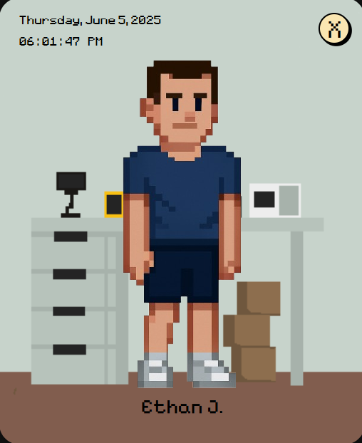
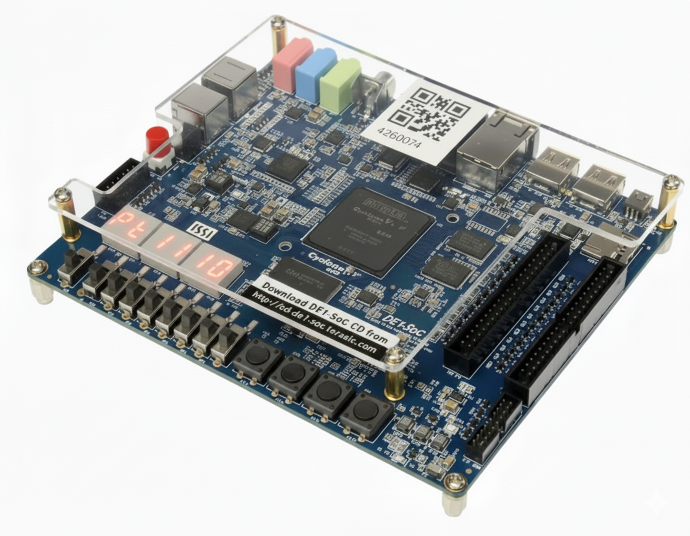
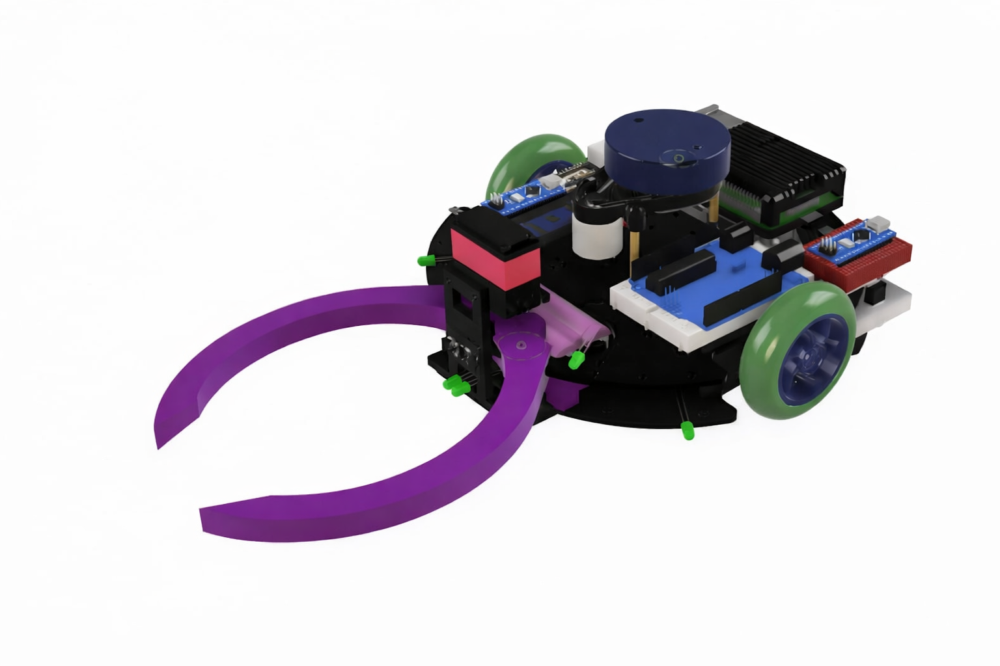
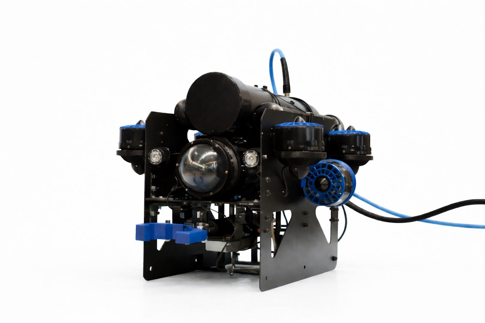
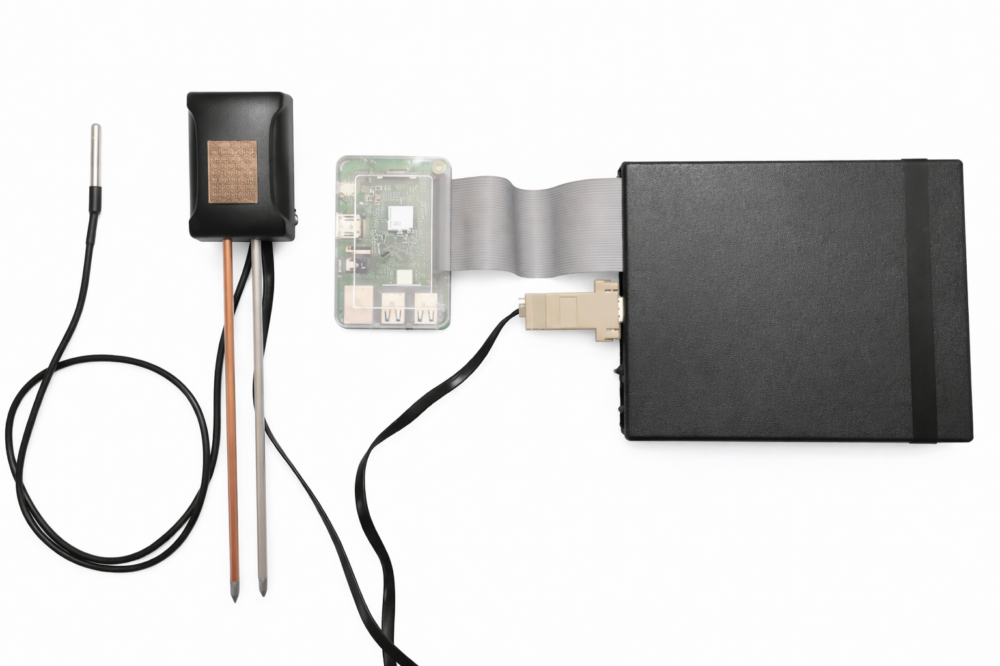
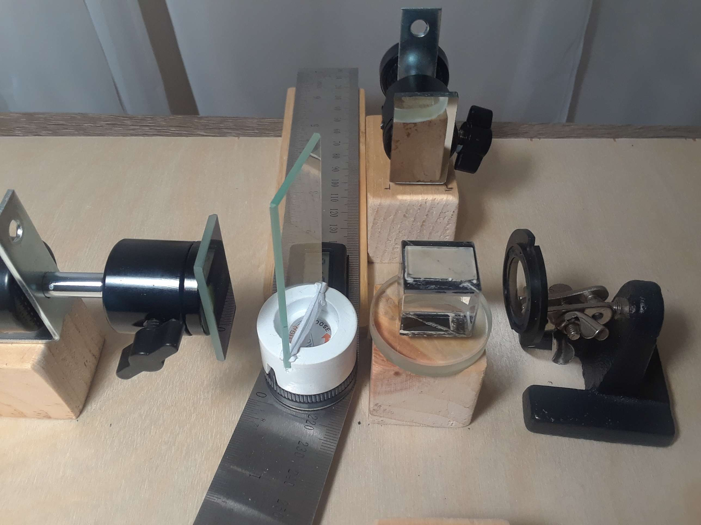

Portfolio
My Projects

Web Development
Food Log Widget
Desktop food logging widget with meal tracking, trigger checklists, and CSV symptom export.

Digital Design
Verilog FPGA Dice Game
FPGA-integrated Craps game with a full RTL data path and FSM controller built in Verilog.

Robotics
Autonomous Robot
Autonomous mine-detection robot using ROS, dead reckoning, and waypoint navigation.

Robotics
Underwater ROV
Award-qualifying underwater ROV with full electrical architecture, Python control systems, and MATE competition entry.

Embedded Systems
Smart Irrigation System
National Bronze Medal winner at the Canada-Wide Science Fair. Multi-sensor smart irrigation system built with Raspberry Pi and Python.

Physics
Michelson's Interferometer
Custom-built optical interferometer used to determine the refractive index of crown glass for IB Physics.
Skills
Cadence Allegro PCB
KiCad
EAGLE
LTSpice
Fusion 360
Python
C
Perl
MATLAB / Simulink
LaTeX
Raspberry Pi
ATmega328P
ROS
Linux
Git
SNMP / Modbus
I2C Communication
SMD Soldering
Benchtop Test Equipment
Schematic Reading
PCB Design
Microsoft Office